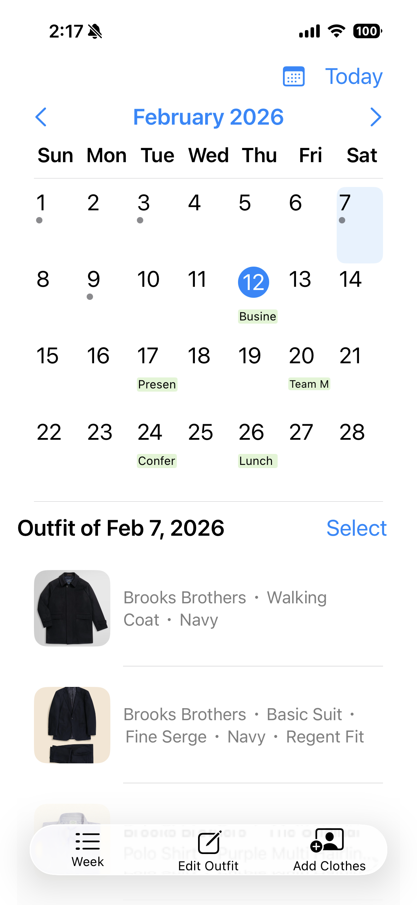
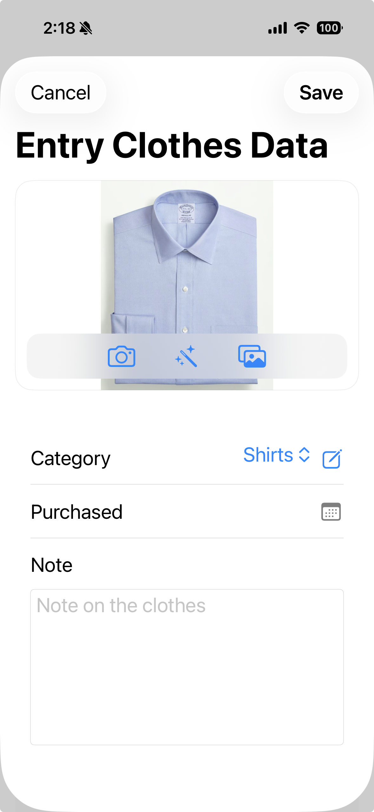
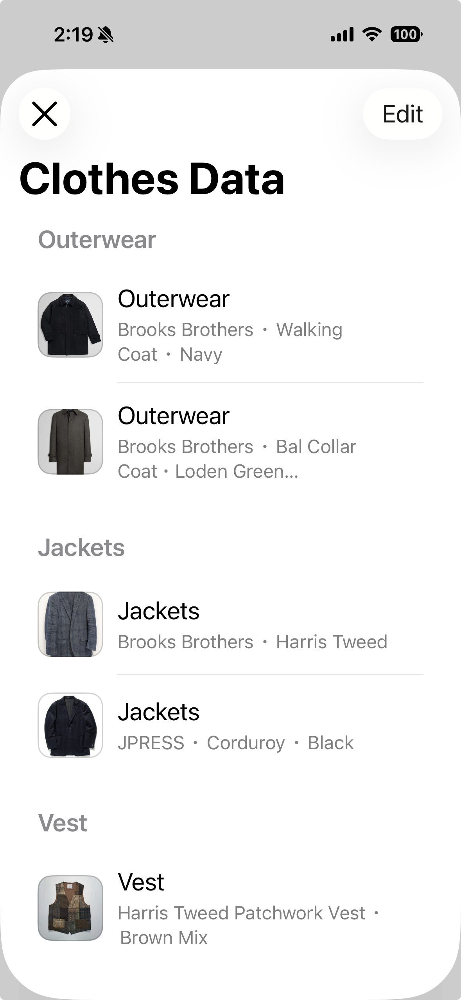
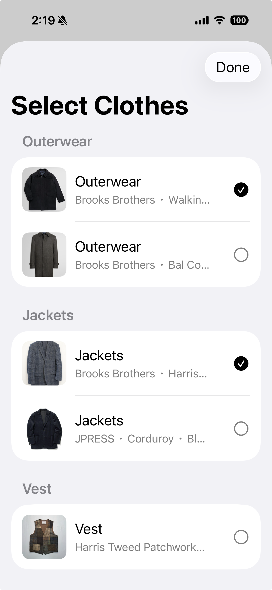
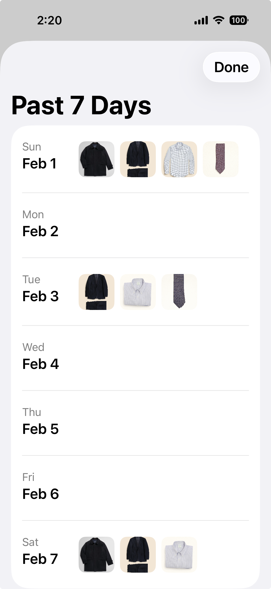

Track your outfits. Organize your wardrobe.

Your outfit history is shown on a monthly calendar. On days where you have outfit records, the calendar displays outfit markers, and it can also show events synced from your connected calendar. Tap a date to see the outfit details for that day at the bottom of the screen, including clothing photos and any notes you saved. At the bottom, you’ll find three quick actions: Week (left), Edit Outfit (center), and andAdd Clothes (right). Tap the calendar icon to view your Apple Calendar lists and select one calendar to sync. Events from the selected calendar will be displayed alongside your outfit records.

Add a clothing photo by taking a picture with the camera or selecting one from your photo library, or pasting an image from the clipboard. You can also use a simple editing tool to cut out the background for a cleaner look. Clothes are managed by category (e.g., Outerwear, Suit, Jacket, Shirts), and you can create your own custom categories. You can also enter the purchase date. In Note, you can store anything you want to remember—brand, color, size, and more.

Update or add details to your saved clothing items. Items are organized by category, and you can reorder them within each category to match your preferences.

Record your daily outfit by checking items from your saved clothing list. If a pattern or detail is hard to see, tap the photo to open a larger preview and use pinch-to-zoom.

Review your outfit history for the past 7 days from the selected date. You can tap any photo to open a larger preview.